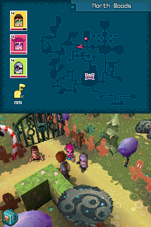
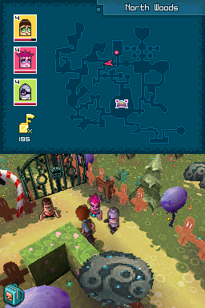

Zubo

Not Complete on 2023-05-02
2 / 5
Release Date: Mar 10, 2009
Meta Score: 75
Screenshots
 

Notes
Zubo is a light RPG that uses touch controls. The obvious comparison for me is to the Mario and Luigi games. You have a team of 3 "Zubo"s, little bean shaped dancers who battle it out. When attacking, you tap the touch screen in time with prompts to do extra damage and generate power points for using special moves. The story is some typical stuff where you're a human who's been transported into the Zubo world and is working to save it.
The battle system is very shallow. It has an extremely simple rock-paper-scissors element system. You can recruit and swap different zubos but there's not a lot of reason to use anything except one of each element. Attacks have nice animations, but they take a long time to play out even for the most basic attack. Enemies play the same animations but you just have to sit through them every time (with a speed up button at least).
On the overworld map between battles the game uses touch controls and an awkward close camera angle. It's not quite over-the-shoulder but it's very zoomed in compared to most DS games in a similar style. Touch controls to move and interact are very stiff as well.
At the end of the day Zubo is kind of fine, but became stale and boring very quickly. Not enough there to support a whole RPG.